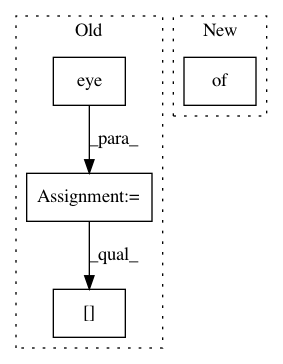

156f9955319ed9383615a7f84e077f10da3bc11a,dipy/workflows/tracking.py,PFTrackingPAMFlow,run,#PFTrackingPAMFlow#Any#Any#Any#Any#Any#Any#Any#Any#Any#Any#Any#Any#Any#Any#Any#,207
Before Change
if save_seeds:
streamlines, seeds = zip(*tracking_result)
tractogram = Tractogram(streamlines, affine_to_rasmm=np.eye(4))
tractogram.data_per_streamline["seeds"] = seeds
else:
tractogram = Tractogram(tracking_result,
affine_to_rasmm=np.eye(4))
After Change
if save_seeds:
streamlines, seeds = zip(*tracking_result)
seeds = {"seeds": seeds}
else:
streamlines = list(tracking_result)
seeds = {}
In pattern: SUPERPATTERN
Frequency: 3
Non-data size: 4
Instances
Project Name: nipy/dipy
Commit Name: 156f9955319ed9383615a7f84e077f10da3bc11a
Time: 2019-07-26
Author: francois.m.rheault@usherbrooke.ca
File Name: dipy/workflows/tracking.py
Class Name: PFTrackingPAMFlow
Method Name: run
Project Name: facebookresearch/Horizon
Commit Name: 1955745230c9f267613ebae9c4febd6fdcaa08cf
Time: 2018-01-08
Author: jjg@fb.com
File Name: ml/rl/test/gridworld/test_limited_action_gridworld.py
Class Name:
Method Name: _build_policy
Project Name: nipy/dipy
Commit Name: 156f9955319ed9383615a7f84e077f10da3bc11a
Time: 2019-07-26
Author: francois.m.rheault@usherbrooke.ca
File Name: dipy/workflows/tracking.py
Class Name: LocalFiberTrackingPAMFlow
Method Name: _core_run